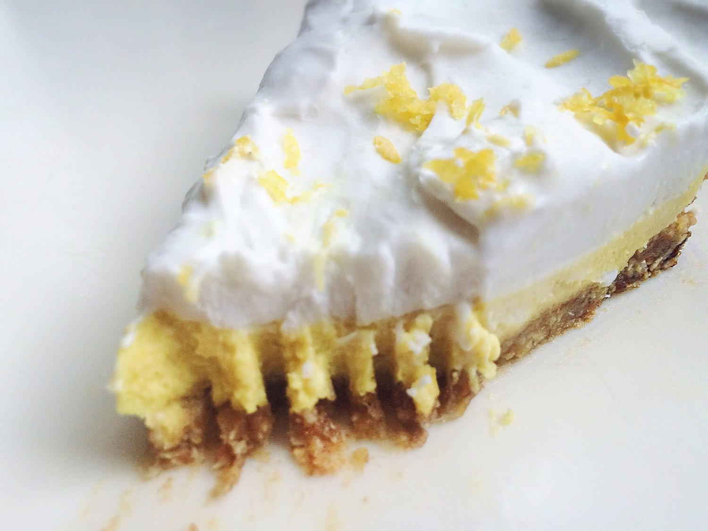
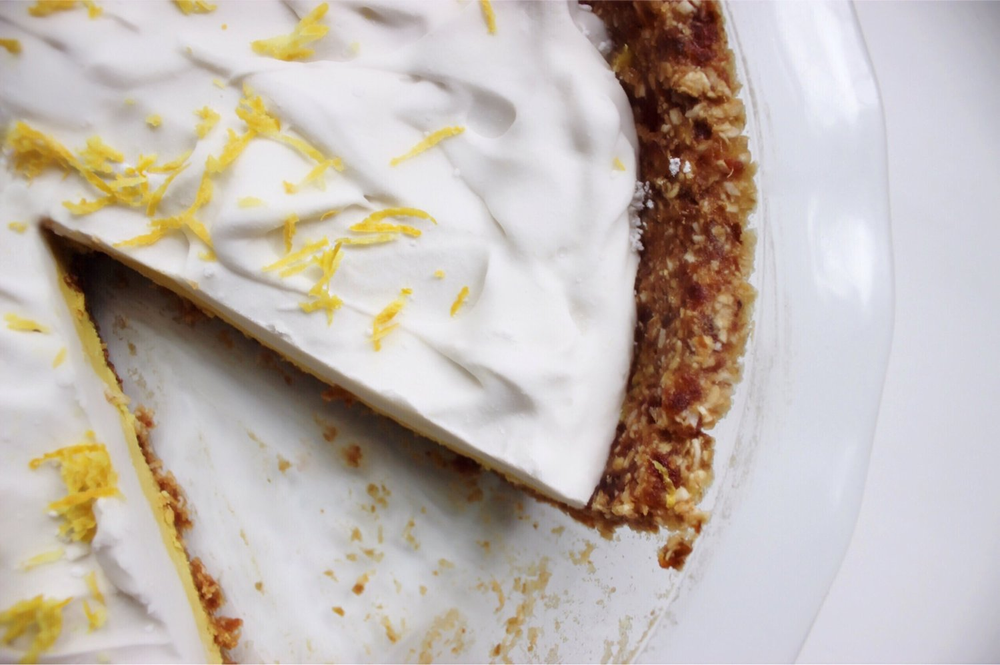

No Bake Vegan Lemon Pie (gluten free)


Did you know it is Pi Day?! I hope you celebrated! If not, whip up this Raw Vegan Lemon Pie for the occasion! Not only is this a gluten free recipe, but this vegan lemon pie requires NO baking. Score!
Pi Day is one of my favorite holidays, after Halloween and Christmas. I guess it's the nerd coming out in me oops. Once I went to college at Georgia Tech, it was hugely celebrated every year with free pie, math jokes, and all around fun. They also do a Pi Mile 5K (3.14 miles) every March and I miss taking part! Now working in a science lab, everyone also celebrates with free pie and math/science jokes. Haaa. I love it so much. :) So this recipe is very special to me! Do you celebrate or is it just me & my peers??
Besides the fun occasion, the pie is just SO good. It's sweet, decadent, but refreshing at the same time because of the sweet lemon flavors. I'd say this is one of the most unique, impressive recipes I've made. I want to say that the non-dairy coconut milk whipped cream topping is the best part (so light and fluffyyy), but I'm also obsessed with the sweet lemon filling. I can't decide D; help me pick!!
No Bake Vegan Lemon Pie
Serves: 8
Pie Crust
-
240 g pitted dates (1.5 cups)
-
60 g raw oats (3/4 cup)
-
6 TBSP unsweetened shredded coconut
-
3-4 TBSP water
Lemon Filling
-
¾ cup raw cashews
-
Zest of 2 lemons
-
Juice from 2 lemons
-
¼ cup maple syrup
-
1 TBSP coconut oil
-
1/8 tsp turmeric (Optional, for color)
-
1/3 cup canned full-fat coconut milk (chilled in the fridge overnight)
Whipped Topping
-
1 whole can full-fat coconut milk (chilled in the fridge overnight)
-
½ cup powdered sugar (Optional)
-
To prepare the crust, blend the dates, oats, and coconut into small bits. Once everything is blended finely, add 3-4 TBSP water to make the mixture hold together while still being malleable. Press the pie crust into a full-sized pie pan, completely covering the base and edges. *It’s easiest to use your hands to press this in.
-
For the lemon filling, soak the raw cashews in water overnight, OR boil them in water for 5-10 minutes until soft. Strain, and blend the cashews with the remaining ingredients except for the coconut milk. Transfer the mixture to a saucepan and add 1/3 cup canned coconut milk. *When you open the can of chilled coconut milk, you want to only use the firm white part on top and discard any of the liquid.
-
Heat the mixture in the saucepan, continuously stirring until the coconut milk is melted and incorporated. Pour your lemon filling on top of the pie crust. Place the pie in the fridge to cool while you make the whipped topping.
-
To make the whipped topping, grab the other can of chilled coconut milk. Again, discard the liquid and only use the firm white portion. Transfer to a bowl with the powdered sugar. *The sugar is optional, but it helps the topping become fluffier and more whipped.
-
Use a hand beater to whip together the coconut milk and sugar, blending for 2-3 minutes until fluffy. Evenly spread on top of the chilled pie. Slice into 8 pieces and enjoy immediately, OR chill in the fridge for at least an hour before serving. *The filling becomes thicker and extremely pleasant after being chilled. Best when chilled. Store extras in the fridge up to a week.
Nutritional Information for 1 slice 400 calories; 22 g fat, 46 g carbs (4 g fiber, 32 g sugar), 5 g proteinI want to make more pie soon! I don't often make pie, especially since being vegan. What kind should I make next?!